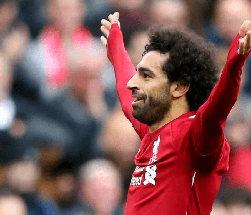

Neymar Jr
Neymar the rolling thunder. He a player of Brazil. Neymar began playing football at an early age and he was soon spotted by Santos FC.
Lionel Messi
Messi was born on 24 June 1987 in Rosario, Santa Fe, the third of four children of Jorge Messi, a steel factory manager.
Cristiano Ronaldo
At age 16, Ronaldo was promoted from Sporting's youth team by first-team manager László Bölöni, who was impressed with his dribbling.
Paulo Dybala
Dybala was born in Laguna Larga. Dybala scored his first career Coppa Italia goal in a 4–0 win over cross-city rivals Torino on 16 December.
Mesut Ozil
Ozil holds the record for the most German Player of the Year awards (5). He made his senior debut for the Germany national team in 2009.
Mauro Icardi
cardi began his footballing career at La Masia, the youth system of La Liga club Barcelona, before moving to Serie A club Sampdoria.
Di Maria
Di María began his career with Rosario Central, but came into prominence at Benfica after signing for the club in 2007.
Kylian Mbappé
Mbappé (born 20 December 1998) began his senior career with Ligue 1 club Monaco, making his professional debut in 2015, aged 16.

Mohamed Salah
Salah started his career with Egyptian club Al Mokawloon, departing thereafter to join Swiss side Basel for an undisclosed fee.
Harry Kane
Kane first played for a local club, Ridgeway Rovers, and joined the Arsenal youth academy when he was eight years old.

Kevin De Bruyne
De Bruyne began his career at Genk, where he was a regular player when they won the Belgian Pro League.He joined English club Chelsea.
Philippe Coutinho
Born in Rio de Janeiro, showed prodigious talent in Vasco da Gama's youth system. He was signed by Italian club Inter Milan.